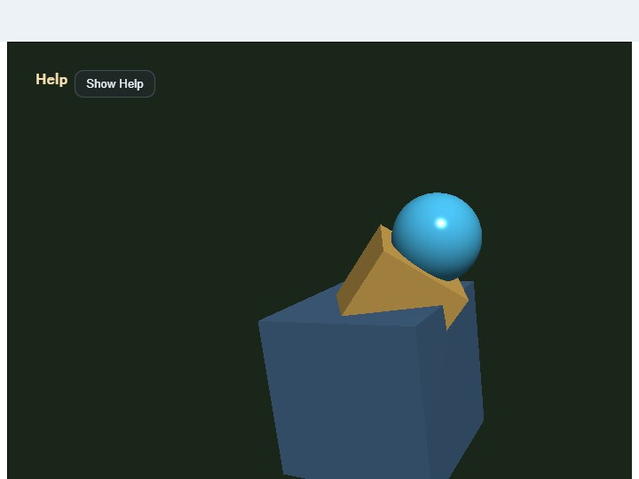

embedded_glb_viewer
English | 日本語

Overview
- This sample runs a
.glbviewer inside a canvas embedded in the middle of the page by usingWebgAppwithlayoutMode: "embedded"andfixedCanvasSize - A single
.glbselected throughinput[type=file]is loaded throughWebgApp.loadModel(), and can then be inspected withEyeRig(type="orbit")through drag / pinch / keyboard control, the viewer's touch orbit / zoom buttons, and CommandPalette viewer actions - The loaded model is positioned so the center of its bounding box comes to the world origin, and the camera target also starts from the origin
- Pressing
Load bundled sampleshows the includedsamples/gltf_loader/hand.glbdirectly, so you can confirm the behavior of the embedded viewer immediately even when you do not have a model at hand - Touch controls are added through
InputController.installTouchControls(), wiring← / → / ↑ / ↓ / + / -as orbit / zoom step actions andR / || / W / Sas viewer actions W, the DOMWbutton, touchW, and the CommandPalette Wire toggle all switch wireframe for every displayed shape at once- Pan follows the standard
EyeRiginteraction, andShift + Drag,Shift + Arrow, and two-finger drag move the target along screen directions - During loading,
showOverlayPanel({ format: "pre", ... })displays the current stage and elapsed time on the canvas, while the Help Panel and right-side status show the file name, triangle count, clip count, camera state, and errors
How to Run
- Open ./embedded_glb_viewer.html
- Use a browser with WebGPU support, and check the Help Panel and CommandPalette together with the sample when needed
webg Features Used
WebgApp: standard initialization forScreen / Shader / Space / Input / Message / overlayEyeRig(type="orbit"): orbit camera driven by drag / wheel / pinch / keyboardWebgApp.loadModel(..., { format: "gltf" }): the glTF / GLB loader pathInputController.installTouchControls(): touch buttons for coarse-pointer devicesCommandPalette: groups load sample / clear / reset / pause / wireframe / screenshot in a canvas paletteWebgApp.showOverlayPanel(): stage display during loadingWebgApp.takeScreenshot(): saves the current canvas
Checkpoints
- When choosing a
.glbfromChoose GLB, confirm that loading starts immediately and the model appears after loading finishes - With
Load bundled sample, confirm thathand.glbis displayed and that for animated modelsSpaceor touch||can pause / resume playback - Right after loading, confirm that the model center is moved to the world origin and that the Help Panel target starts at
0, 0, 0 - Confirm that drag, pinch, arrows,
[ ], and touch← / → / ↑ / ↓ / + / -all operate the same orbit camera, and that each tap on the touch buttons responds reliably - Confirm that
Shift + Drag,Shift + Arrow, and two-finger drag move the view target naturally in screen directions - Confirm that toggling
Wswitches the whole displayed model between solid and wireframe - Confirm that
RorReset viewreturns the camera to the initial framing - Confirm that
Sor touchSsaves the current canvas - Confirm that
/or double tapping the canvas opens the CommandPalette and can run Load / Clear / Reset / Pause / Wire / Shot
Controls
Choose GLB: choose a local.glbfileLoad bundled sample: load the bundledhand.glb- Drag: orbit camera
- Two-finger drag: pan the camera
- Pinch / mouse wheel /
[ ]/ touch+ -: zoom - Arrow / touch
← → ↑ ↓: orbit camera Shift + Drag / Shift + Arrow: pan the cameraW / DOM W / touch W: toggle wireframeR / touch R: reset the cameraSpace / touch ||: pause / resume animationS / DOM S / touch S: save a screenshotClear: hide the current model and return to the placeholder display/or double tap the canvas: open the CommandPalette